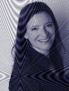
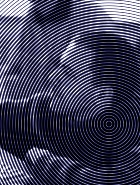
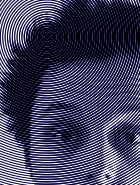
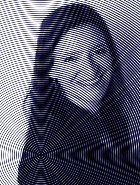
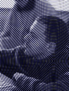
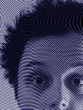

Ich bin unsterblich. Ich schaue alle Jubellichtjahre mal vorbei, mal hier, mal dort. Gerade bin ich Passagier des Raumschiffes Erde, das mit 60.000 Meilen pro Stunde unterwegs ist irgendwo im Sonnensystem – Buckminster Fuller (1895-1983)
Die Idee. Das Motto der letzten reboot in Kopenhagen war ACTION. Hier kommt unsere Antwort:
Eine Hamburger Un-Konferenz für Digitales, Interaction-Design und Internet
Programm. Das Programm ist rund. Wir freuen uns insbesondere über auf die Gäste Kars Alfrink aus Utrecht und Thomas Madsen-Mygdal aus Kopenhagen.


 

Auge und Ohr. Helge Angermeyer hat wunderbare Photos der Veranstaltung gemacht. Außerdem wurden alle Vorträge für podcampus aufgenommen und erscheinen dort in einem Raum Schiff Erde Channel.
Bucky Fuller. Unser Namenspatron, der als Astronaut (auf dem Raumschiff Erde) unterwegs war und nicht in einer Zeile zu beschreiben ist. Daher: Who is Buckminster Fuller und zwei kurze Interview-Ausschnitte.
Startseite RSE11Mediathek RSE10 Feed Impressum
RSE10 Programm Stellwerk Bilder Teilnehmer Banner Crew